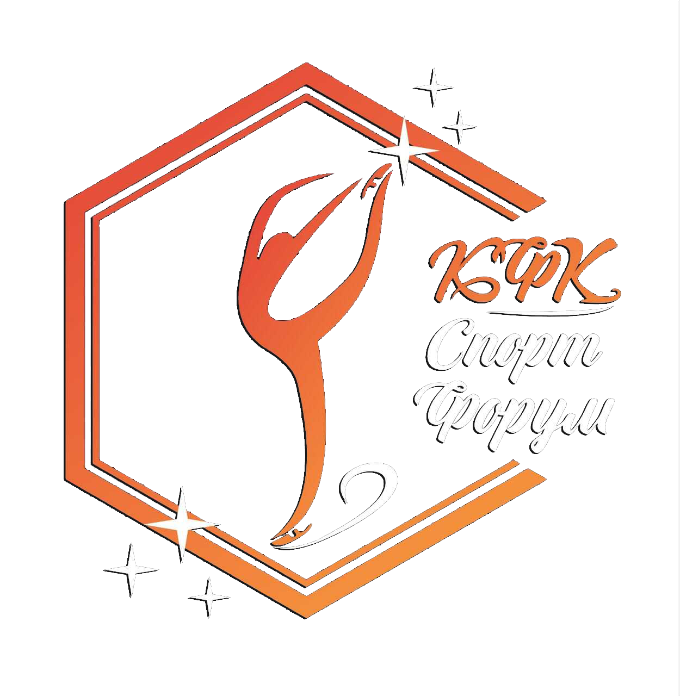

День открытых дверей
Приходите посмотреть, как проходят тренировки, познакомиться с тренерами и попробовать первое скольжение на льду. Вход свободный, запись по телефону.
ЛК «Молодежка»
СпортФорумКЛУБ ФИГУРНОГО КАТАНИЯ На пробное занятиеВсё, что происходит на льду и вокруг него: ближайшие старты, праздники, дни открытых дверей — и история наших сезонов.
← На главнуюДаты уточняются администратором клуба.
Записаться и узнать детали можно
по телефону +7 (925) 354-1430.
Приходите посмотреть, как проходят тренировки, познакомиться с тренерами и попробовать первое скольжение на льду. Вход свободный, запись по телефону.
ЛК «Молодежка»Праздничная программа юных фигуристов: постановочные номера, фото на арене и открытая тренировка для гостей клуба.
Ледовая арена «Крылатское»Клубный турнир: короткая и произвольная программа, судейство, награждение и общая фотография участников сезона.
ЛК «Молодежка»Короткий путь клуба — от одной группы
до двух ледовых площадок
и собственных турниров.
Клуб начал работу с одной группы начальной подготовки. Три тренера, двадцать воспитанников и единая программа: лёд, физическая подготовка и хореография.
Воспитанники клуба вышли на городские и любительские турниры, выполнили первые спортивные разряды. Появилась своя традиция — показательный występ в конце сезона.
К тренировкам на «Молодежке» добавилась ледовая арена «Крылатское». Программы объединены в шесть направлений, открыта запись на персональные занятия и постановку программ.
Откройте страницу года: там собрана текущая информация, расписание событий и история конкретного сезона.
События «СпортФорума» — это дни открытых дверей, показательные программы, клубные турниры и праздники на льду. Мы собираем участников разных возрастов и уровней, чтобы каждый мог выступить, поддержать друзей и почувствовать атмосферу настоящего старта.
Актуальные даты, площадки и условия участия публикуем в разделах 2026 и 2027 годов. Расписание тренировок и стоимость абонементов — в разделе «Расписание» на главной странице.
Выберите событие, свяжитесь с администратором и подтвердите участие. Для выступлений тренер помогает подобрать программу, музыку и костюм, для гостей мы подготовим место на арене и фотографа.
Вопросы по событиям: +7 (925) 354-1430 · kfksportforum@yandex.ru